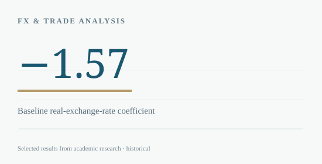

← BACK TO RESEARCH LIBRARY
Macroeconomic Research / 2025
Japan’s Weak Yen & Persistent Trade Deficit
A data-led challenge to a simple interpretation of exchange-rate competitiveness.
USC · ECON 521Group research
THE RESEARCH QUESTION
Why did Japan experience persistent trade deficits even as the yen weakened significantly?
Used Japanese monthly data for 2010–2024 to study exchange-rate movements, inflation, industrial production and trade balance persistence.

METHODOLOGY
How the analysis was conducted
Modeled monthly net exports using the real yen exchange rate and lagged trade balance, then introduced CPI, PPI and the industrial production index. Interpreted results against pricing-to-market and imported-input dependency mechanisms.
KEY FINDINGS
What the evidence suggests
- The baseline exchange-rate coefficient was −1.57 (p=0.0444), conditional on lagged net exports.
- In the extended regression, producer-price increases were negatively associated with the trade balance.
- The study suggests that import costs and production structures may offset the export-volume benefits of depreciation in the short run.
SCOPE & LIMITATIONS
Regression coefficients describe conditional correlations, not identified causal effects. The paper was written as a group course project.
SOURCE
Based on “Japan’s Persistent Trade Deficit under a Weak Yen” (ECON 521, group project).
The original file, raw datasets and third-party institutional materials are not hosted here pending a separate publication-rights and privacy review.